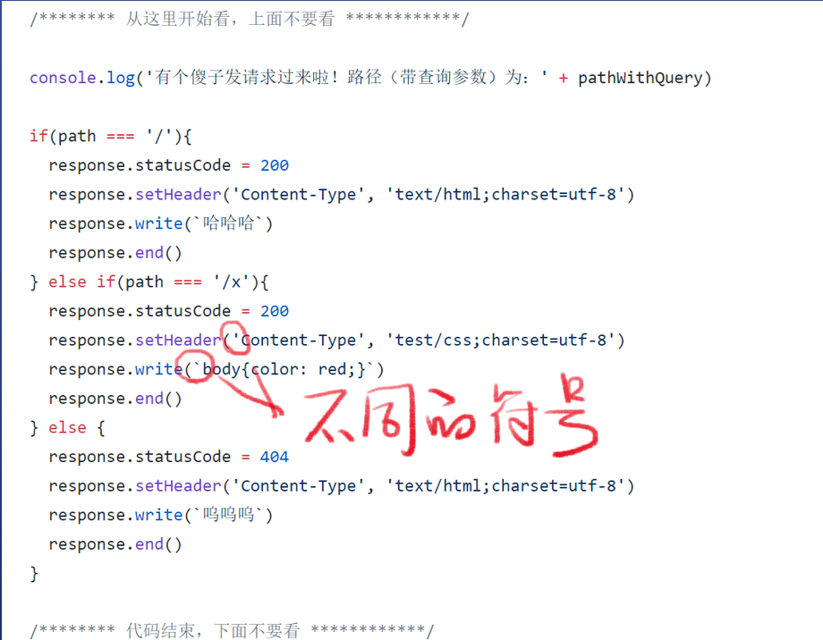

请求与响应 & Node.js Server
请求(Request)与响应(Response)–模型
如何发送请求
- 方法：
- 用chrome 地址栏直接输入(baidu.com)，就是发送请求
- 用curl命令
- 概念
- 需用编程
- Node.js 有一个http 模块可以做到
- 初始代码，直接用https://github.com/FrankFang/nodejs-test/blob/master/server.js
- 注意事项：
- 这些代码就是服务器代码，一般放在服务器上
- path 是不带查询参数的路径 /x
- query 是查询参数的对象形式{a:’1’}
- queryString 是查询参数的字符串形式 ?a=1
- pathWithQuery 是带查询参数的路径，一般不用
- request 是请求对象
- response 是响应对象
- 代码逻辑
- 用 if else 判断路径，并返回响应
- 如果是已知路径，一律返回200
- 如果是 未知路径，一律返回404
- Content-Type 表示内容（类型/语法）
- response.write()可以填写返回的内容
- response.end()表示响应可以发给用户了

HTTP基础概念
请求(Request)
- Method 路径+查询参数 协议名/版本
- Host：域名或IP
- Accept：text/html
- Content-Type: 请求体的格式
- 回车
- 请求体（也就是上传内容）
- 细节
- 三部分：请求行(start line)、请求头(header)、请求体(body)
- 文档位于RFC 2616第五章
- 请求体在GET中一般为空
响应(Response)
- 协议名/版本 状态码 状态字符串
- Content-Type；响应体格式
- 回车
- 响应体（也就是下载内容）
- 细节
- 三部分：状态行(start line)、响应头(header)、响应体(body)
- 常见的状态码是考点
- 文档位于 REF 2612第六章
HTTP Method
- GET–获取资料
- POST–上传资料
- PUT–更新资料
- PATCH–覆盖资料
- DELETE–删除资料
HTTP Status Code
用curl 命令构造请求(Request)
- curl -v http://localhost:8888
- 设置请求动词(Method: POST上传)
- 如：curl -v -X POST http://localhost:8888 注意大小写
- 设置路径和查询参数
- 直接在url 后面加。 如： curl -v -X POST http://localhost:8888/xxxx?wd=hi
- 设置请求头(header)
- -H ‘Name:Value’ 或者 –header ‘Name:Value’
- 如： curl -v -X POST -H ‘Accept: text/html’ http://localhost:8888
- 设置请求体(body)
- -d ‘内容’ 或者 –data ‘内容’
- 如： curl -v -X POST -H ‘Content-Type: text/plain;charset=utf-8’ -d ‘请求体内容’ http://localhost:8888
用 Node.js 读取请求
- 读取请求方法
- request.method
- 读取路径
- pathWithQuery ，带查询参数
- path 纯路径，不带查询参数
- query 只有查询参数
- 读取请求头
- request.headers[‘Accept’]
- 读取请求体
用Node.js 设置响应
- 设置响应状态码
- response.statusCode=200
- 设置响应头
- response.setHeader(‘Content-Type’,’text/html’);
- 设置响应体
- response.write(‘内容’)
- 可追加内容
console.log 调试大法
- 问题：所有的路径都是以 / 开头
部署Node.js 应用到云服务器
- 购买服务器
- 允许8888端口
- 实例–加入安全组，端口填写8888/8888(任意改)
- 授权填写0.0.0.0/0,表示任何人都能访问
- 此时就可以通过 http://实例IP：8888 访问了
- 使用服务器
- 重置实例密码，然后重启实例
- 远程连接，输入密码
- Login: 后输入 root
- password: 输入实例密码
- ssh 远程登陆
- 首先登陆root账户
- 成功看到welcome之后
- 把本地公钥复制到阿里云 echo ‘GitHub公钥 ~/.ssh/id_sra.pub’ >> ~/.ssh/authorized_keys
1
2cat ~/.ssh/id_sra.pub 获取公钥
echo 'ssh-rsa xxxxxxx7@gmail.com' >> ~/.ssh/authorized_keys - 新建终端，在本地运行 ssh root@实例IP
- 此时就可以在本地终端操作云服务器了
- 总结：
- 首先将本地公钥复制到阿里云
- 在本地用 ssh root@实例IP 来远程操作云机器
- 也可以在hosts文件里，给实例IP取个名字
- 想要退出云机器，可以输入exit
- 如果卡了，可以直接退出终端 ctrl + w
- 如何防止 ssh 卡住
- 在本地终端运行下面代码
1
2echo "Host *" >> /etc/ssh/ssh_config
echo " ServerAliveInterval 30" >> /etc/ssh/ssh_config - 然后重启终端生效，如果没有生效就重启机器
创建应用账户
- 原因： linux 的root账户拥有最高权限，一旦被攻克···
- 步骤
- adduser grey
- Enter new UNIX passwordd: 输入密码
- 再次输入密码
- 一直回车，直到结束
- 运行如下命令
1
2
3
4
5adduser grey
mkdir /home/grey/.ssh
cp ~/.ssh/authorized_keys /home/grey/.ssh/
chmod 755 /home/grey/.ssh/authorized_keys
chown grey:grey /home/grey/.ssh/authorized_keys - 现在 ssh grey@实例IP就可以使用了
sudo
- 给grey 添加 sudo 权限
1
adduser grey sudo
- sudo–super user do
- 类似于Windows的 ‘以管理员身份运行’
- 平时应该用 grey账户，而不是 root 账户
- 使用ctrl + A 可以快速回到命令前面
- sudo !! 的意思是用sudo 执行上一句命令
安装 Node.js 14
- 步骤
1
2
3
4
5
6
7
8curl -sL https://deb.nodesource.com/setup_14.x | sudo bash -
sudo apt-get update
sudo apt-get install -y nodejs
node -v
npm -v
npx -v
sudo apt install git安装git
- 命令
- sudo apt install git
- 遇到’Y/n’ 输入y 回车
- git –version
- 注意
- 由于无界面环境，安装不了 vscode，vim 太难
- 所以不要使用 git commit -v 改用 -m “xxx”
部署应用
- 下载代码 git clone https://github.com/xxxx.git
- 只是下载，所以不要使用 ssh 地址，使用 https
- 启动应用
1
2
3
4
5
6
7
8
9
10git clone https://github.com/FrankFang/nodejs-test.git
cd nodejs-test
touch log
启动命令：node server.js 8888 > log 2>&1 &
把启动命令做成 start 文件
添加执行权限 chmod +x ./start
运行 sh ./start 得到一个进程号 pid
tail log 看 log 内容
kill -9 pid 可以关掉进程
killall node 可以关掉所有 node 进程重启应用
- 上传代码
- 在本地改完代码，git push
- 下载代码
1
2
3
4
5
6ssh frank@实例ip
cd nodejs-test
git pull
killall node（因为忘了进程号，实际上可以记下来）
sh ./start
重启完毕
All articles in this blog are licensed under CC BY-NC-SA 4.0 unless stating additionally.